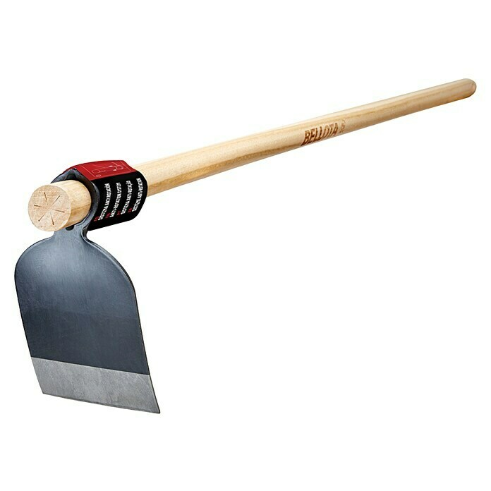
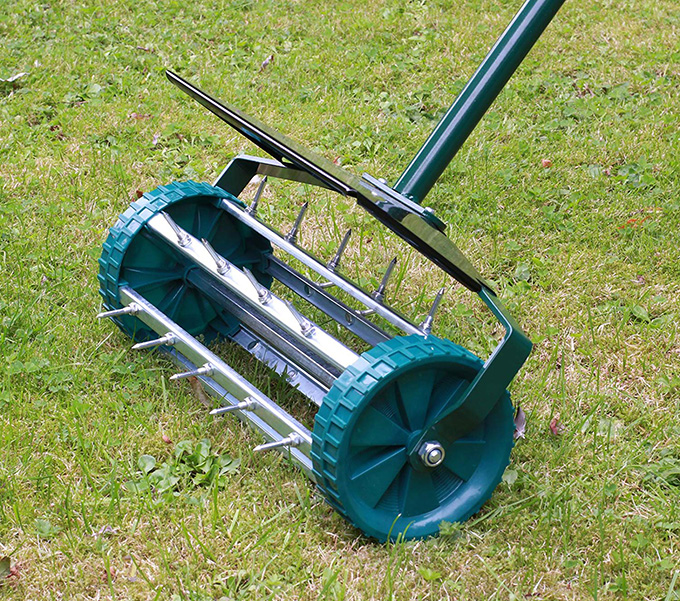
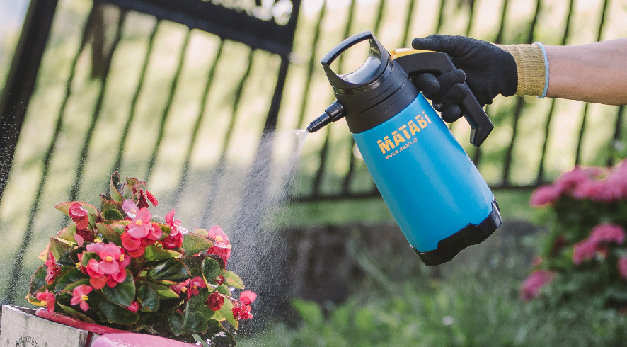
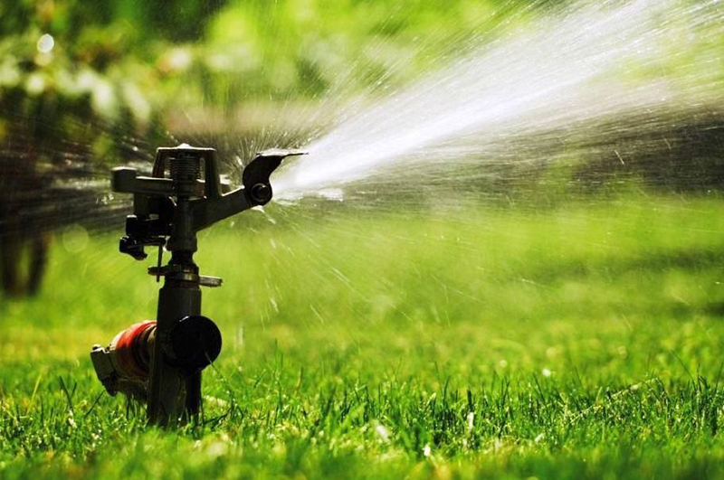

Introducción
En esta página encontraremos las palabras más comunes para la letra A.
| Azada | Aireador |
|---|---|
|  |  |
| Es una herramienta de jardinería que se utiliza para remover la tierra y preparar el suelo para la siembra. | Es una herramienta de jardinería que se utiliza para airear el suelo y mejorar la circulación del agua y los nutrientes. |
| Abono | Atomizador |
|  | |
| Es una sustancia orgánica o inorgánica que se utiliza para fertilizar el suelo y mejorar el crecimiento de las plantas. | Es una herramienta que se utiliza para aplicar productos químicos o líquidos en forma de pulverización fina sobre las plantas. |
| Aspersor | |
|  | |
| Es una herramienta de jardinería que se utiliza para regar grandes áreas de césped o jardín. | |